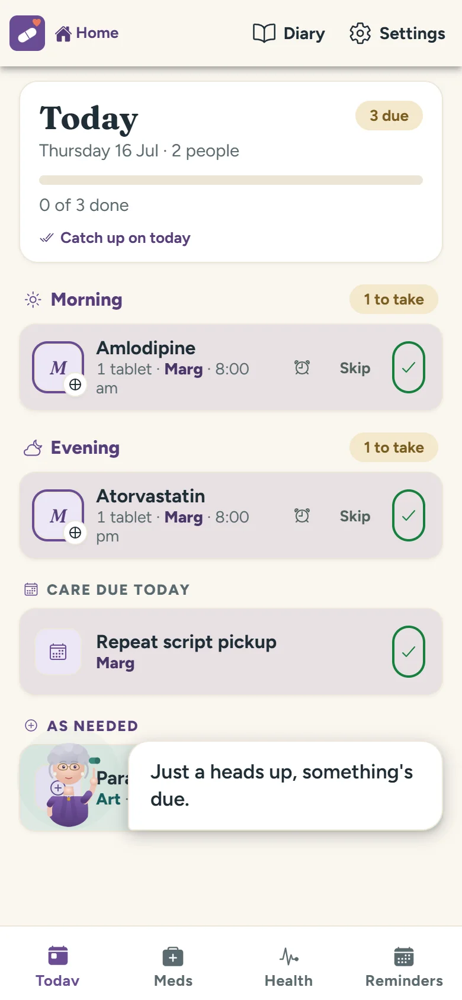
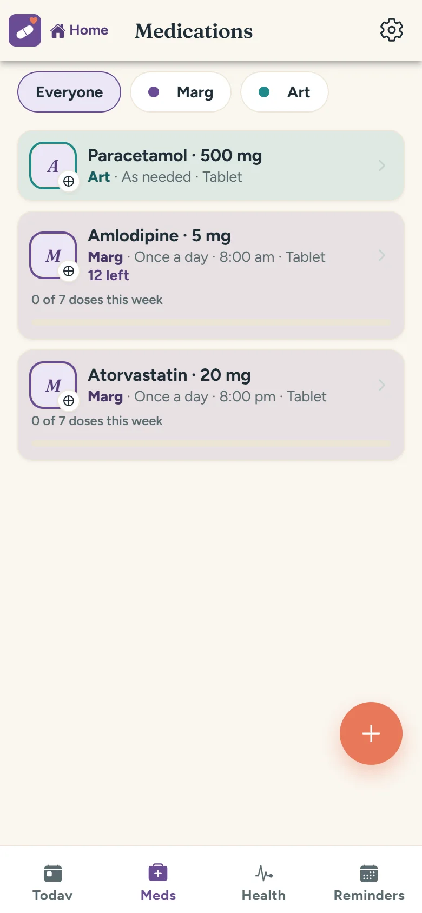
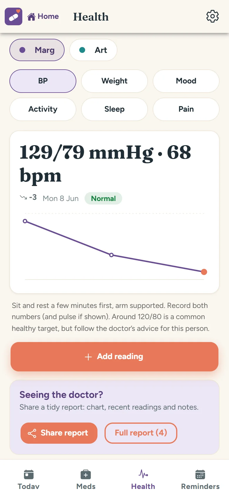
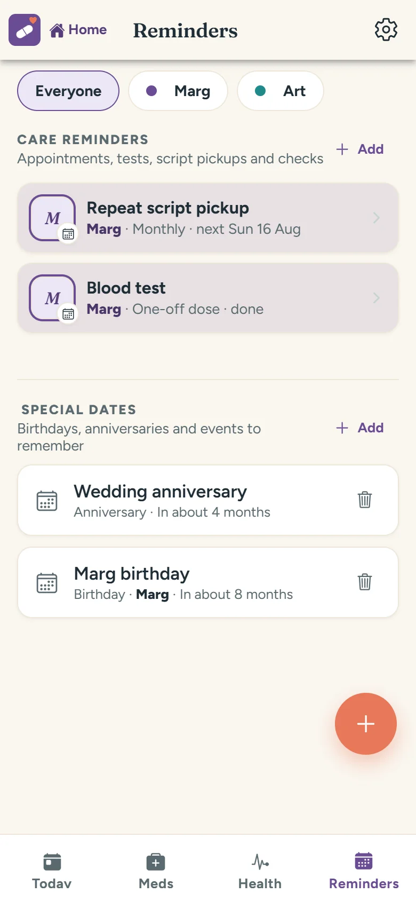
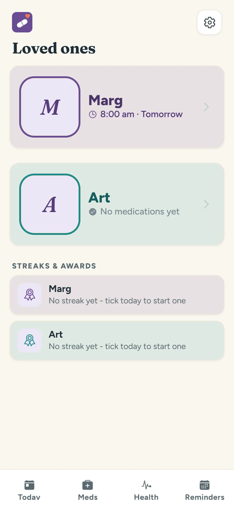

Treat the Babs
In development · coming 2026A kind little medication reminder for the Babs in your life — Mum, Dad, Nan, Pop — and for the family helping them stay on track.
Built dementia-friendly from the first screen: big text, big buttons, one calm list for today, and a gentle "catch up" when a dose slips by. It looks after one or two people, remembers repeat scripts and blood tests, tracks blood pressure, weight, mood, sleep and pain, keeps notes on falls and dizzy spells, and turns the lot into a tidy report for the next doctor's visit. One tap calls the GP.
Family sharing is built in — strictly opt-in — so a son in Sydney or a daughter in Perth can see that this morning's tablets were taken, without ringing to nag. It all works offline; sharing only happens between the people you invite.
Caring for a parent and keen to test early? Email us — carers' feedback shapes what gets built next.

A look inside
Big, calm and hard to get lost in.
Real screenshots from the app as it's being built. Everything is large-print, high-contrast and one tap deep.




What it does
Made for the Babs. Built for the family.
Big text, big buttons
Large print, high contrast and nothing fiddly. Designed dementia-friendly from the very first screen.
Gentle reminders
A nudge when each dose is due, and a kind "catch up on today" when one slips by. No guilt, no alarms blaring.
One or two people
Mum, Dad or both — each with their own meds, doctors and diary, switched with one big friendly button.
Health readings
Blood pressure, weight, mood, activity, sleep and pain — big-number entry, charted over time.
Scripts & blood tests
Repeat script pickups, blood tests and appointments, remembered so nobody has to.
Falls & dizzy spells
A quick note when something happens — falls, dizziness, confusion — so patterns show up early.
Family sharing
Opt-in sharing lets far-away family see today's ticks from their own phone — reassurance without the nagging phone call.
Doctor visits & reports
One-tap call to the GP, visit notes, and a tidy printable report of meds and readings for the next appointment.
Their health story stays in the family.
Treat the Babs keeps everything on the phone. No account is needed to use it, and there's no advertising or analytics anywhere near it. Family sharing is strictly opt-in — records sync only between the people you invite, never to us. This is your parents' health information; it's nobody else's business.
Support
Caring for a Bab? We'd love your input.
Questions, ideas and stories from carers all land in the same friendly inbox — they genuinely steer what gets built.
support@warrimoo.netTreat the Babs is an organisational aid, not a medical device, and it isn't medical advice. Always follow the treating doctor's instructions, and in an emergency call 000 — don't rely on an app. Terms of use